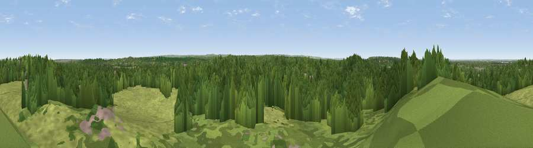

Viewpoint near West End
#28721 in England · top 24% of its area beats it · near West EndThe view, rendered

A 360° render of this exact spot computed from the terrain model, tree cover and land cover — summer colours, afternoon light, calibrated against photographs of famous viewpoints. Real trees, hedges and buildings will differ in detail.
The panorama
Grey silhouette: terrain skyline in each direction (720 bearings, Earth curvature and refraction included). Dashed green: skyline with trees (+15 m) and buildings (+8 m) as obstacles. Blue strip: how far the ground is visible on each bearing.
Where the view opens
Wedge length = distance to the farthest visible ground on that bearing (vegetation-aware). Rings at 10, 25 and 50 km.
What fills the view
60% woodland · 33% grassland · 5% built-up ·
Angular shares of the visible panorama (visual magnitude), not map area. Landscape diversity 0.39 (0–1 Shannon).
Key numbers
More beautiful places nearby
The staircase of upgrades: each row has a higher view potential than everything closer. Driving times are estimates from straight-line distance, calibrated against real road routing — check an actual route before setting out.
| Place | Direction | Drive | Score |
|---|---|---|---|
| Viewpoint near Esher | NNE · 2 km | ~5 min | 45.4 |
| Viewpoint near Oxshott | SE · 4 km | ~10 min | 50.5 |
| St Ann's Hill | WNW · 12 km | ~22 min | 51.8 |
| Box Hill Viewpoint | SSE · 13 km | ~24 min | 55.7 |
| Viewpoint near Dorking | S · 13 km | ~24 min | 55.9 |
| Box Hill | SSE · 14 km | ~25 min | 70.4 |
| Viewpoint near Box Hill Village | SSE · 14 km | ~25 min | 71.0 |
| Viewpoint near Coldharbour | S · 20 km | ~34 min | 71.3 |
51.35725, -0.37384 · source: screening · position refined by local search. Computed location — check access rights before visiting.